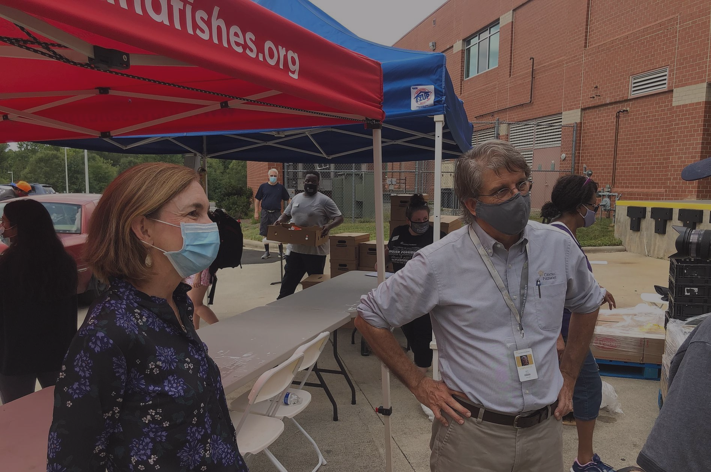

☰

Strategic Leadership Council
-
Bishop Claude Alexander, Pastor, The Park Church
-
Dr. Adrian Bird, Chair, Interfaith Partners of South Carolina; Assistant Professor, Union Presbyterian Seminary, Charlotte
-
Sally Gambrell Bridgford, President, The Gambrell Foundation
-
Brian Collier, Executive Vice President, Foundation for the Carolinas
-
Bill Crowder, Board Chair, Wingate University; COO, Crowder Construction Company
-
Imam John Ederer, Imam and Religious Director, Muslim Community Center of Charlotte
-
Dianne English, Executive Director, Community Building Initiative
-
Maria Flores-Mills, Vice President of Student Engagement and Dean of Student Life, Queens University
-
Mary Gaertner, social justice advocate; retired Neighborhood and Business Services Program Coordinator, City of Charlotte
-
Stephanie Glaser, Associate Vice President for Campus and Community Relations, Davidson College
-
Mark Helms, Dean of Student Life and Service Learning, Central Piedmont Community College
-
Rabbi Dusty Klass, Associate Rabbi, Temple Beth El
-
Rev. LeDayne McLeese Polaski, Executive Director, MeckMIN
-
Claire Trexler, Queens Alumna; Belk Chapel Advisory Board; Trexler Foundation
-
Kristi Walters, Program Officer, Higher Education, The Duke Endowment